พระราชกรณียกิจ
ด้านพัฒนาการศึกษา
สมเด็จพระกนิษฐาธิราชเจ้า กรมสมเด็จพระเทพรัตนราชสุดา ฯ สยามบรมราชกุมารี
img1.jpg
ขนาดที่แนะนำ: 1120 x 550 px
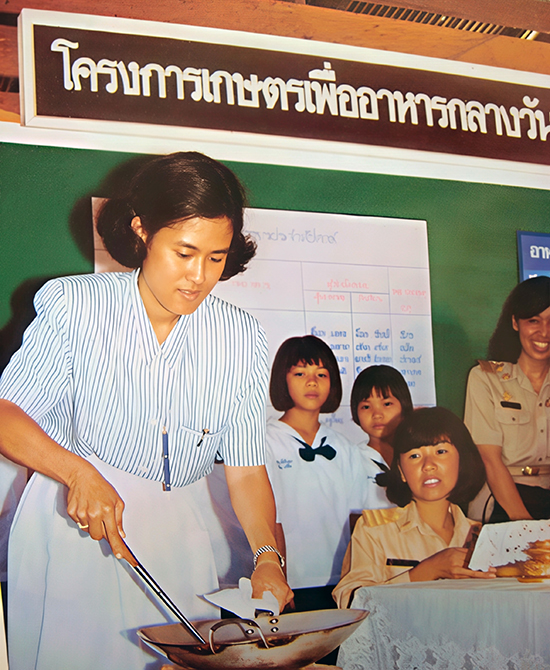
“เมื่อแรกเริ่มคือประมาณ พ.ศ. ๒๕๒๒ ถึง ๒๕๒๓ ประมาณนั้น ได้มีความสนใจ ในเรื่องนี้ แต่ว่ายังไม่ได้มีความรู้ในหลักการและวิธีการที่จะปฏิบัติมากนัก จึงหาโอกาสที่จะศึกษาโดยการขออาศัยโรงเรียนในสังกัดตำรวจตระเวนชายแดน เป็นแหล่งที่ศึกษา เพราะว่าเห็นว่าโรงเรียนในสังกัดตำรวจตระเวนชายแดนนั้น เป็นโรงเรียนในเขตท้องถิ่นที่ห่างไกลการคมนาคม และมีภาวะที่ยากลำบากต่าง ๆ ในตอนเริ่มต้นก็มุ่งไปในแง่ที่ว่า ทำอย่างไรเยาวชนที่อยู่ในวัยศึกษาเล่าเรียนอย่างนั้น จะมีสุขภาพพลานามัยแข็งแรงสมบูรณ์ พร้อมที่จะสร้างเสริมสติปัญญาเพื่อการศึกษา และพัฒนาตัวเองให้เป็นประโยชน์ต่อภูมิลำเนาและสังคมสืบต่อไป”
พระราชดำรัสในโอกาสที่คณะผู้ปฏิบัติงานโครงการตามพระราชดำริ เข้าเฝ้าฯ
ณ อาคารชัยพัฒนา สวนจิตรลดา กรุงเทพมหานคร
วันศุกร์ที่ ๒๕ สิงหาคม พ.ศ. ๒๕๓๑
img2.jpg
ขนาด: 300 x 200 px
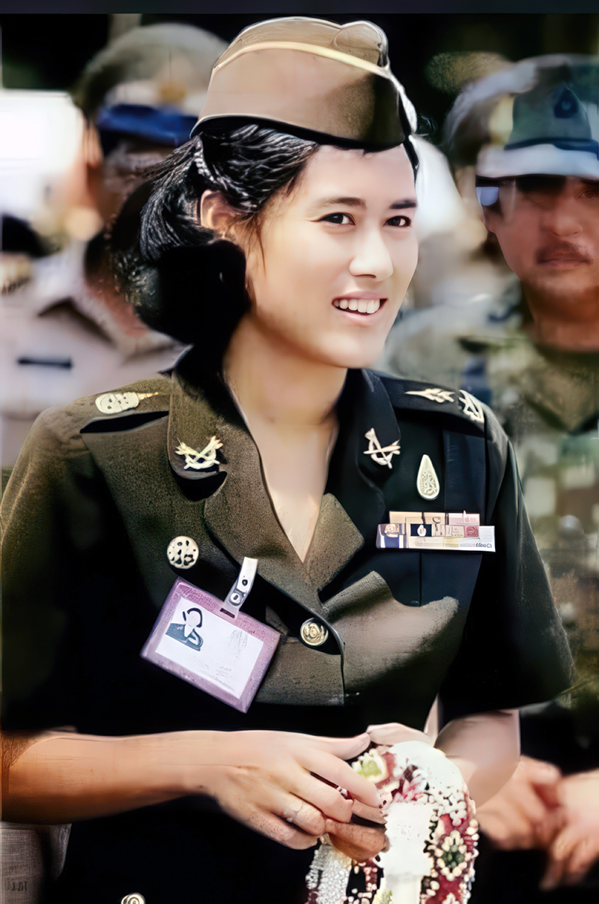
img3.jpg
ขนาด: 800 x 200 px
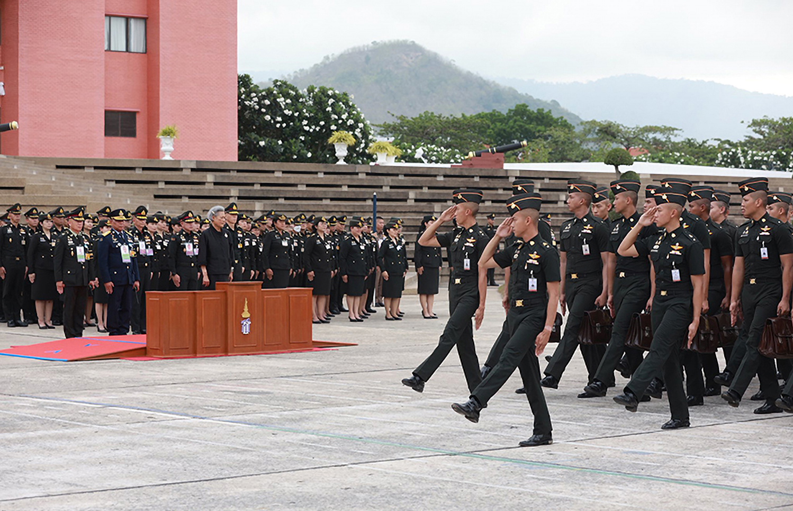
พลเอกหญิง สมเด็จพระกนิษฐาธิราชเจ้า กรมสมเด็จพระเทพรัตนราชสุดา เจ้าฟ้ามหาจักรีสิรินธร มหาวชิราลงกรณวรราชภักดี สิริกิจการิณีพีรยพัฒน รัฐสีมาคุณากรปิยชาติ สยามบรมราชกุมารี ทรงรับราชการในตำแหน่งอาจารย์ส่วนการศึกษา โรงเรียนนายร้อยพระจุลจอมเกล้า เมื่อ พ.ศ. ๒๕๒๓ โดยทรงสอนวิชาต่าง ๆ ณ กองวิชากฏหมายและสังคมศาสตร์ เช่น วิชาประวัติศาสตร์ไทยและวิชาสังคมวิทยา ต่อมา พ.ศ. ๒๕๓๐ ได้มีการจัดตั้งกองวิชาประวัติศาสตร์ขึ้น จึงดำรงตำแหน่งหัวหน้ากองวิชา ในฐานะข้าราชการประจำและ “ทูลกระหม่อมอาจารย์” พระองค์เสด็จพระราชดำเนินมาทรงปฏิบัติพระราชกรณียกิจที่โรงเรียนนายร้อยพระจุลจอมเกล้า เป็นประจำสัปดาห์ละ ๒ วัน เนื่องจากอีก ๕ วันที่เหลือ จะทรงปฏิบัติพระราชกรณียกิจเพื่อราษฎรทั้งประเทศ และเมื่อ พ.ศ. ๒๕๕๓ ทรงดำรงตำแหน่งผู้บัญชาการพิเศษ โรงเรียนนายร้อยพระจุลจอมเกล้า และทรงเกษียณอายุราชการ เมื่อวันที่ ๒๙ กันยายน ๒๕๕๘ ปัจจุบันพระองค์ทรงเป็นอาจารย์พิเศษของกองวิชาประวัติศาสตร์ ดำรงตำแหน่งศาสตราจารย์เกียรติคุณ โดยทรงร่วมกิจกรรมการเรียนการสอน และทรงพระกรุณามีพระราชวินิจฉัยในเรื่องสำคัญที่เกี่ยวกับการเรียนการสอน เช่น การจัดทำกำหนดการสอน การทัศนศึกษา การคัดสรรอาจารย์พิเศษ เป็นต้น
img4.jpg
ขนาดที่แนะนำ: 1120 x 350 px
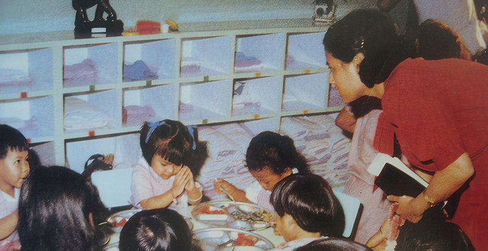
ต่อมา มีเยาวชนที่จบการศึกษาประถมศึกษาปีที่ ๖ ซึ่งเป็นระดับสูงสุดของโรงเรียนในถิ่นทุรกันดารในสมัยนั้น แต่ขาดแคลนทุนทรัพย์ไม่มีโอกาสได้ศึกษาต่อทั้งที่มีสติปัญญาความสามารถ ใน พ.ศ. ๒๕๓๑ สมเด็จพระกนิษฐาธิราชเจ้า กรมสมเด็จพระเทพรัตนราชสุดา ฯ สยามบรมราชกุมารี ได้ทรงพระราชทานทุนการศึกษาให้นักเรียนได้มีโอกาสศึกษาต่อในระดับสูงขึ้นตามระดับสติปัญญาและความสามารถ ปัจจุบันทุนพระราชทานได้ขยายเป็น ๕ กลุ่ม คือ นักเรียนในพระราชานุเคราะห์สามเณรนักเรียนในพระราชานุเคราะห์ ทุนการศึกษาพระราชทานบุตรครู ทุนการศึกษาหลักสูตรประกาศนียบัตรวิชาชีพครู และทุนการศึกษาพระราชทานตามพระราชประสงค์
img5.jpg
ขนาดที่แนะนำ: 550 x 380 px
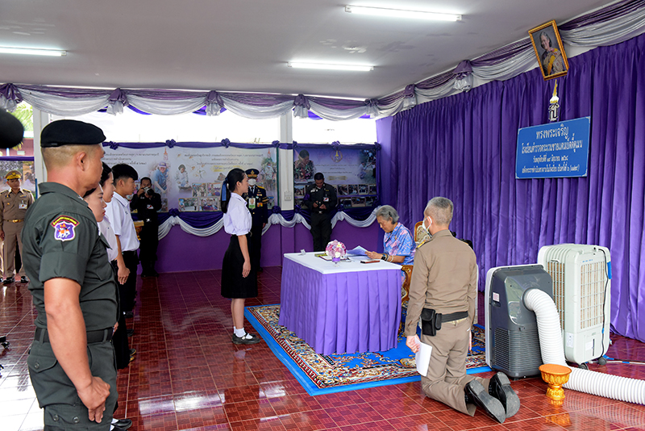
img6.jpg
ขนาดที่แนะนำ: 550 x 380 px
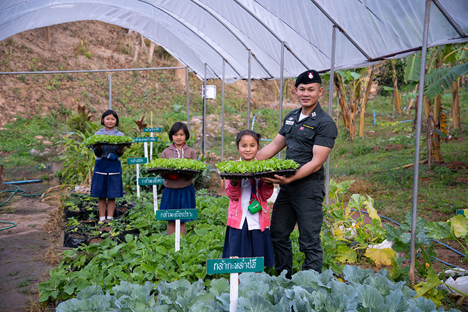
วันที่ ๒๓ เมษายน พ.ศ. ๒๕๒๓ ทรงเริ่มงานพัฒนาเด็กและเยาวชน ด้วยตระหนักว่าเด็กจะเรียนหนังสือไม่ได้ ถ้าท้องหิวหรือเจ็บป่วย จึงทรงเริ่มทดลอง “โครงการอาหารกลางวันผักสวนครัว” ในโรงเรียนตำรวจตระเวนชายแดน ๓ โรงเรียน เมื่อประสบผลดีจึงขยายงานไปยังโรงเรียนตำรวจตระเวนชายแดนทั่วประเทศใน พ.ศ. ๒๕๒๔ โดยใช้ชื่อว่า “โครงการเกษตรเพื่ออาหารกลางวัน” จากการแก้ไขปัญหาเด็กขาดสารอาหารในอดีต ปัจจุบันได้กลายเป็นการพัฒนาเด็กและเยาวชนแบบองค์รวม ที่เด็กและเยาวชนจะได้พัฒนาศักยภาพของตนเองอย่างสมดุลด้วยการสนับสนุนองค์ความรู้และทรัพยากรที่จำเป็น ทั้งด้านการศึกษา อาหาร โภชนาการ สุขภาพอนามัย การงานอาชีพ การอนุรักษ์สิ่งแวดล้อม และวัฒนธรรมท้องถิ่น ครอบคลุมตั้งแต่ทารกในครรภ์มารดาไปถึงเด็กวัยรุ่นในระดับมัธยมศึกษา เยาวชนที่เคยขาดโอกาสเพราะความแตกต่างทางภูมิศาสตร์ สังคม และวัฒนธรรม จึงมีโอกาสเข้าถึงความมั่นคงทางอาหาร มีสุขภาพแข็งแรง และได้รับการศึกษาอย่างมีคุณภาพ
img7.jpg
ขนาด: 360 x 240 px
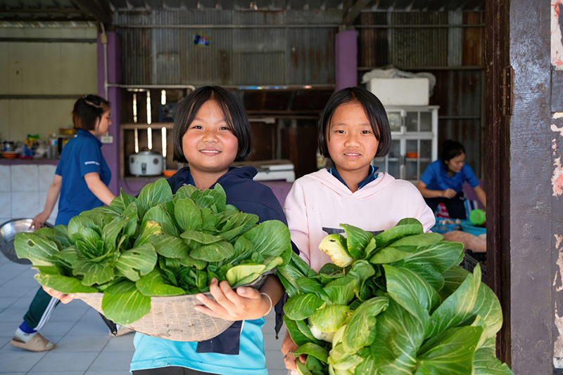
img8.jpg
ขนาด: 360 x 240 px
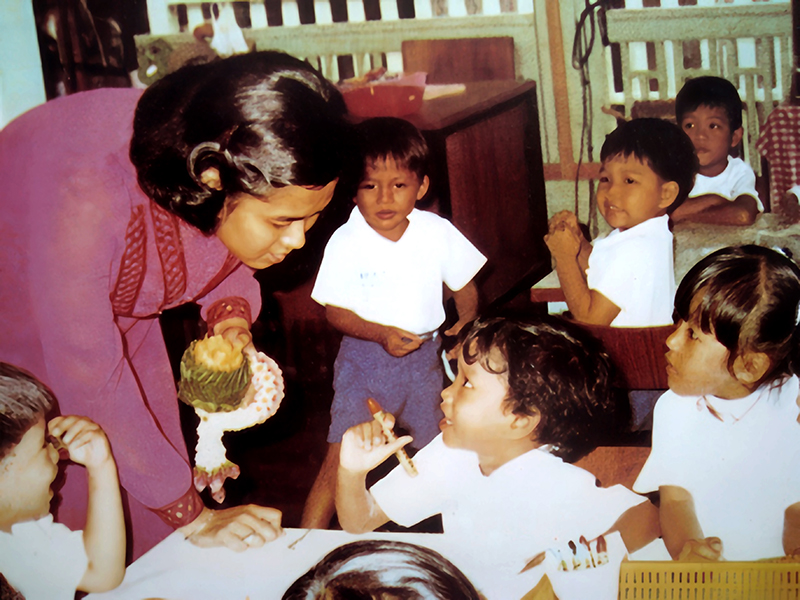
img9.jpg
ขนาด: 360 x 240 px
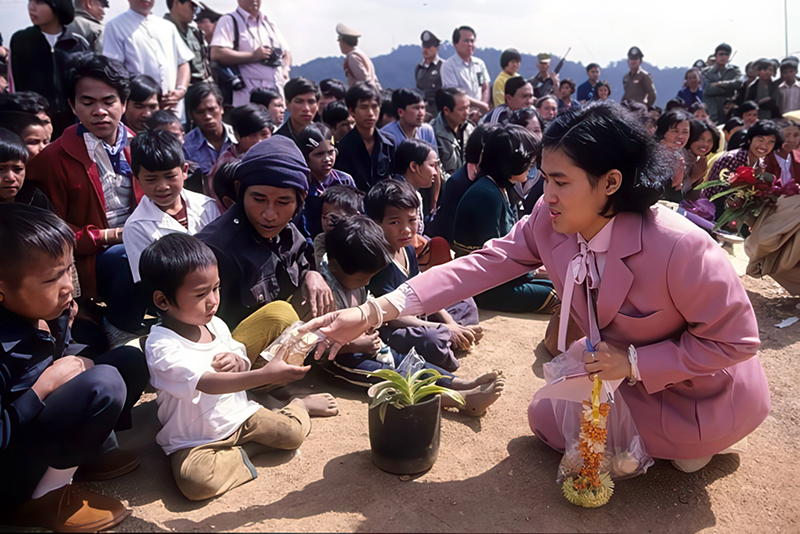
ต่อมาใน พ.ศ.๒๕๓๘ ทรงเห็นถึงผู้ด้อยโอกาสในสังคม ๔ กลุ่มได้แก่ เด็กนักเรียนในชนบท ผู้พิการ-เด็กเจ็บป่วยเรื้อรังในโรงพยาบาล ผู้ต้องขัง และเยาวชนในสถานพินิจและคุ้มครองเด็กและเยาวชน จึงทรงริเริ่มให้จัดทำ “โครงการเทคโนโลยีสารสนเทศ ตามพระราชดำริสมเด็จพระเทพรัตนราชสุดา ฯ สยามบรมราชกุมารี” โดยใช้ประโยชน์จากศักยภาพของเทคโนโลยีสารสนเทศหรือไอที (Information Technology : IT) สร้างเสริมและพัฒนาคุณภาพชีวิตให้แก่ผู้ด้อยโอกาส ให้สามารถพัฒนาตนเองเป็นคนดี พึ่งตนเองได้ และช่วยเหลือพัฒนาชุมชนทำให้ทุกคนมีชีวิตความเป็นอยู่ที่ดีขึ้นได้ วันที่ ๑๓ สิงหาคม ๒๕๕๘ ได้จัดตั้ง “มูลนิธิเทคโนโลยีสารสนเทศตามพระราชดำริสมเด็จพระเทพรัตนราชสุดา ฯ สยามบรมราชกุมารี” เพื่อดำเนินโครงการตามพระราชดำริ ๔ โครงการหลัก คือ โครงการไอทีเพื่อการศึกษาและพัฒนาผู้ด้อยโอกาส, โครงการพัฒนากำลังคนด้านวิทยาศาสตร์และเทคโนโลยี โครงการวิทยาศาสตร์เทคโนโลยีเพื่อพัฒนาการศึกษาและคุณภาพชีวิต โครงการวิทยาศาสตร์และเทคโนโลยีเพื่อการวิจัย ซึ่งแต่ละโครงการยังมีโครงการย่อยภายใต้การรับผิดชอบเป็นจำนวนมาก ช่วยพัฒนาการศึกษาด้านวิทยาศาสตร์และเทคโนโลยีให้กับประเทศไทยได้อย่างก้าวกระโดด
img10.jpg
ขนาด: 360 x 240 px
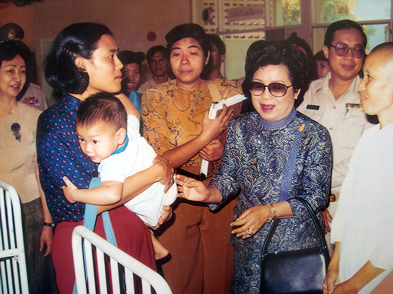
img11.jpg
ขนาด: 360 x 240 px
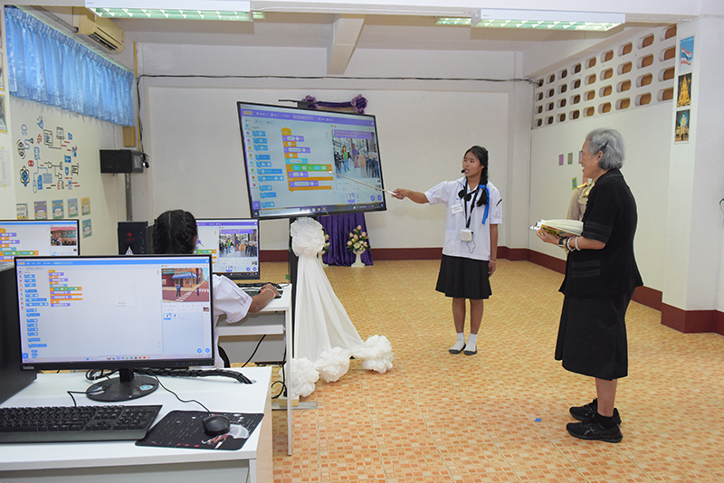
img12.jpg
ขนาด: 360 x 240 px
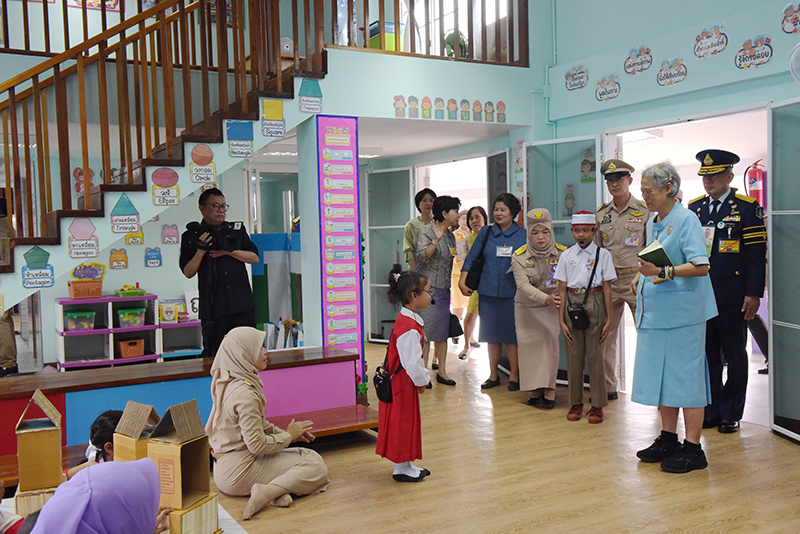